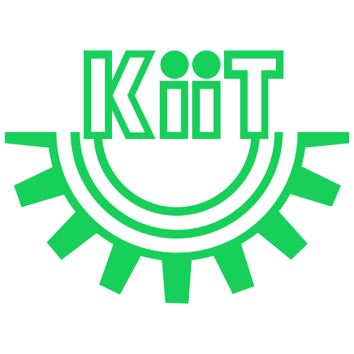
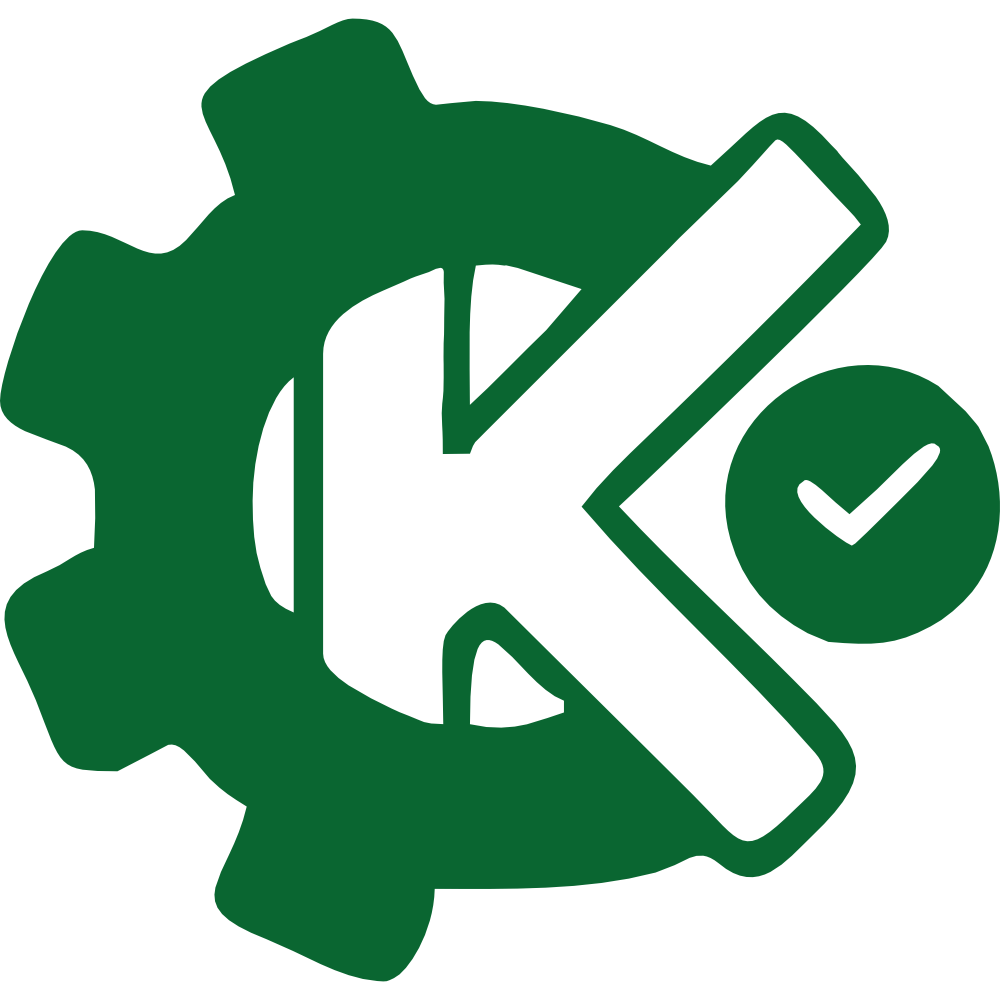

<header class="navbar-custom sticky top-0 flex items-center justify-between px-4 sm:px-6 md:px-10 lg:px-16">
  <div class="flex items-center gap-2 sm:gap-3">
    <a href="index.html" class="flex items-center">
      
      <span class="mx-2 h-12 w-0.5 rounded [background-image:linear-gradient(to_bottom,var(--gradient-start),var(--gradient-end))]"></span>
      
    </a>
  </div>

  <nav class="hidden lg:flex items-center gap-x-5 xl:gap-x-7 text-[15px] relative main-nav">
    <a href="index.html" class="nav-link">Home</a>
    <div class="relative dropdown">
      <a href="about.html" class="nav-link flex items-center gap-1">
        About IQAC
        <svg xmlns="http://www.w3.org/2000/svg" viewBox="0 0 20 20" fill="currentColor" class="w-4 h-4 opacity-60">
          <path fill-rule="evenodd" d="M5.22 8.22a.75.75 0 0 1 1.06 0L10 11.94l3.72-3.72a.75.75 0 1 1 1.06 1.06l-4.25 4.25a.75.75 0 0 1-1.06 0L5.22 9.28a.75.75 0 0 1 0-1.06Z" clip-rule="evenodd" />
        </svg>
      </a>
      <div class="dropdown-menu">
        <a href="about.html#vision-mission">Vision & Mission</a>
        <a href="about.html#objectives">Objectives</a>
        <a href="about.html#brochure">IQAC Brochure</a>
        <a href="about.html#dean-message">Dean's Message</a>
        <a href="about.html#composition">Composition of IQAC</a>
      </div>
    </div>
    <a href="policies.html" class="nav-link">Policies & Guidelines</a>
    <div class="relative dropdown">
      <a href="reports.html" class="nav-link flex items-center gap-1">
        Reports & Publications
        <svg xmlns="http://www.w3.org/2000/svg" viewBox="0 0 20 20" fill="currentColor" class="w-4 h-4 opacity-60">
          <path fill-rule="evenodd" d="M5.22 8.22a.75.75 0 0 1 1.06 0L10 11.94l3.72-3.72a.75.75 0 1 1 1.06 1.06l-4.25 4.25a.75.75 0 0 1-1.06 0L5.22 9.28a.75.75 0 0 1 0-1.06Z" clip-rule="evenodd" />
        </svg>
      </a>
      <div class="dropdown-menu">
        <a href="reports.html#aqar">AQAR Reports</a>
        <a href="reports.html#ssr">SSR Documents</a>
        <a href="reports.html#naac">NAAC Reports</a>
        <a href="reports.html#annual-reports">Annual Reports</a>
        <a href="reports.html#feedback">Feedback & Analysis</a>
      </div>
    </div>
    <a href="events.html" class="nav-link">Events & Gallery</a>
  </nav>

  <div class="flex items-center gap-2 sm:gap-3">
    <a href="https://kiit.ac.in" target="_blank" class="external-button hidden sm:inline-flex items-center" rel="noopener noreferrer">
      kiit.ac.in
      <svg xmlns="http://www.w3.org/2000/svg" viewBox="0 0 20 20" fill="currentColor" class="w-4 h-4 ml-1.5 opacity-80">
        <path d="M12.232 4.232a2.5 2.5 0 0 1 3.536 3.536l-1.225 1.224a.75.75 0 0 0 1.061 1.06l1.224-1.224a4 4 0 0 0-5.656-5.656l-3 3a4 4 0 0 0 .225 5.88l.12.121a.75.75 0 0 0 1.06-1.06l-.12-.121a2.5 2.5 0 0 1-.142-3.665l3-3Z" />
        <path d="M1.606 14.47a4 4 0 0 0 5.656 5.657l3-3a4 4 0 0 0-.225-5.881l-.12-.121a.75.75 0 0 0-1.06 1.06l.12.121a2.5 2.5 0 0 1 .142 3.665l-3 3a2.5 2.5 0 0 1-3.536-3.536l1.225-1.224a.75.75 0 0 0-1.06-1.06l-1.224 1.224Z" />
      </svg>
    </a>
    <button id="mobile-menu-button" class="lg:hidden p-2 rounded-md hover:bg-gray-200 focus:outline-none focus:ring-2 focus:ring-inset focus:ring-[var(--accent-color)] transition-colors">
      <svg id="menu-icon-open" class="h-6 w-6 text-[var(--solid-dark)]" fill="none" stroke="currentColor" viewBox="0 0 24 24">
        <path stroke-linecap="round" stroke-linejoin="round" stroke-width="2" d="M4 6h16M4 12h16m-7 6h7" />
      </svg>
      <svg id="menu-icon-close" class="h-6 w-6 text-[var(--solid-dark)] hidden" fill="none" stroke="currentColor" viewBox="0 0 24 24">
          <path stroke-linecap="round" stroke-linejoin="round" stroke-width="2" d="M6 18L18 6M6 6l12 12" />
      </svg>
    </button>
  </div>
</header>

<div id="mobile-nav-menu" class="lg:hidden">
  <a href="index.html" class="nav-link">Home</a>
  <div>
      <a href="#" class="mobile-dropdown-toggle nav-link flex justify-between items-center">
          About IQAC
          <svg xmlns="http://www.w3.org/2000/svg" viewBox="0 0 20 20" fill="currentColor" class="w-4 h-4 opacity-60 transform transition-transform duration-200">
              <path fill-rule="evenodd" d="M5.22 8.22a.75.75 0 0 1 1.06 0L10 11.94l3.72-3.72a.75.75 0 1 1 1.06 1.06l-4.25 4.25a.75.75 0 0 1-1.06 0L5.22 9.28a.75.75 0 0 1 0-1.06Z" clip-rule="evenodd" />
          </svg>
      </a>
      <div class="mobile-dropdown-content">
          <a href="about.html#vision-mission" class="nav-link">Vision & Mission</a>
          <a href="about.html#objectives" class="nav-link">Objectives</a>
          <a href="about.html#brochure" class="nav-link">IQAC Brochure</a>
          <a href="about.html#dean-message" class="nav-link">Dean's Message</a>
          <a href="about.html#composition" class="nav-link">Composition of IQAC</a>
      </div>
  </div>
  <a href="policies.html" class="nav-link">Policies & Guidelines</a>
  <div>
      <a href="#" class="mobile-dropdown-toggle nav-link flex justify-between items-center">
          Reports & Publications
          <svg xmlns="http://www.w3.org/2000/svg" viewBox="0 0 20 20" fill="currentColor" class="w-4 h-4 opacity-60 transform transition-transform duration-200">
              <path fill-rule="evenodd" d="M5.22 8.22a.75.75 0 0 1 1.06 0L10 11.94l3.72-3.72a.75.75 0 1 1 1.06 1.06l-4.25 4.25a.75.75 0 0 1-1.06 0L5.22 9.28a.75.75 0 0 1 0-1.06Z" clip-rule="evenodd" />
          </svg>
      </a>
      <div class="mobile-dropdown-content">
          <a href="reports.html#aqar" class="nav-link">AQAR Reports</a>
          <a href="reports.html#ssr" class="nav-link">SSR Documents</a>
          <a href="reports.html#naac" class="nav-link">NAAC Reports</a>
          <a href="reports.html#annual-reports" class="nav-link">Annual Reports</a>
          <a href="reports.html#feedback" class="nav-link">Feedback & Analysis</a>
      </div>
  </div>
  <a href="events.html" class="nav-link">Events & Gallery</a>
  <a href="https://kiit.ac.in" target="_blank" class="nav-link mt-2 bg-[var(--ui-accent)] text-white text-center rounded-md hover:bg-[var(--solid-primary-darker)]" rel="noopener noreferrer">
      KIIT Official Site
  </a>
</div>